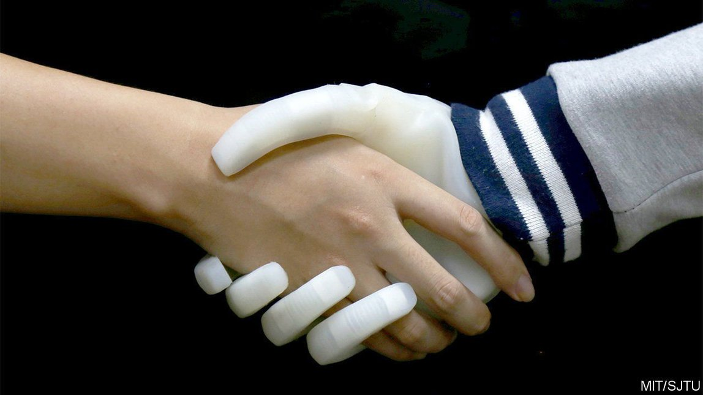

2021-09-01T06:30:33+00:00
Prosthetics
义肢
義肢
A new prosthetic hand
一种新型假手
一種新型假手
It is cheaper and better than anything now available
它比目前市场上的任何假手都更便宜，也更好
它比目前市場上的任何假手都更便宜，也更好
PROSTHETIC LIMBS have been around for a long time. The oldest known, a piece of wood carved and painted to replace the lost toe of an Egyptian noblewoman, dates back more than 3,000 years. But prosthetics which behave like the real thing as well as looking like it are still very much a work in progress. And a group at Shanghai Jiao Tong University, in China, have just come up with what looks to be a significant advance—an affordable prosthetic hand that not only responds like a real one to signals from the wearer’s brain, but is also able to signal back to the brain what it is touching and doing.
义肢的历史相当久远。已知最古老的义肢可以追溯到3000多年前，是一块雕刻过并涂了漆的木头，用以代替一名埃及贵妇人失去的脚趾。不过外形和功能都像真肢体的假肢基本上仍在研发中。中国上海交通大学的一个研究小组最近取得了一项看起来意义重大的进展——一只普通人买得起的假手，不仅能像真手那样响应使用者的大脑发出的信号，还能向大脑发回有关它的动作和物品触感的信号。
義肢的歷史相當久遠。已知最古老的義肢可以追溯到3000多年前，是一塊雕刻過並塗了漆的木頭，用以代替一名埃及貴婦人失去的腳趾。不過外形和功能都像真肢體的假肢基本上仍在研發中。中國上海交通大學的一個研究小組最近取得了一項看起來意義重大的進展——一隻普通人買得起的假手，不僅能像真手那樣響應使用者的大腦發出的信號，還能向大腦發回有關它的動作和物品觸感的信號。
Gu Guoying and his colleagues describe their invention in Nature Biomedical Engineering. Its fingers are made of rigid tubes connected by soft joints. These are similarly connected to a 3D-printed plastic palm. The whole is covered with a flexible elastomer layer to mimic skin and is attached to the user’s residual limb via a customised plastic socket. In contrast to current models, which are electrically powered, Dr Gu’s hand is powered pneumatically by a pump held in a waist bag, with the connecting air lines running under the user’s clothes alongside communication cables. This reduces its weight below 300 grams—half that of some current models, and less, indeed, than the weight of a real hand—though the waist bag adds a further 444 grams.
谷国迎和他的同事在《自然-生物医学工程》（Nature Biomedical Engineering）上介绍了他们的发明。这只假手的手指由用柔软“关节”连接的硬管组成。这些手指又通过相似的方式连到一个3D打印的塑料手掌上。整只假手上覆盖着一层柔性弹性体，模拟皮肤，并通过定制的塑料接口连接到用户的残肢上。与目前的电动假手不同，谷国迎的气动假手通过装在一个腰包里的气泵驱动，连接气泵与假手的充气线和通讯电线藏在使用者的衣服里面。这将假手的重量减少到300克以下，只有目前一些型号的一半重，实际上比真手还要轻。不过，装有气泵的腰袋还有444克的重量。
谷國迎和他的同事在《自然-生物醫學工程》（Nature Biomedical Engineering）上介紹了他們的發明。這隻假手的手指由用柔軟“關節”連接的硬管組成。這些手指又通過相似的方式連到一個3D打印的塑料手掌上。整隻假手上覆蓋著一層柔性彈性體，模擬皮膚，並通過定製的塑料接口連接到用戶的殘肢上。與目前的電動假手不同，谷國迎的氣動假手通過裝在一個腰包里的氣泵驅動，連接氣泵與假手的充氣線和通訊電線藏在使用者的衣服裡面。這將假手的重量減少到300克以下，只有目前一些型號的一半重，實際上比真手還要輕。不過，裝有氣泵的腰袋還有444克的重量。
The hand uses similar signal-processing algorithms to other prosthetics on the market. The big advance is that it does not require invasive surgery or electronic implants into the residual limb to communicate with the user’s brain. Sensors on the skin record electrical activity from the remaining arm muscles. In an intact arm, this activity would tell those muscles how to operate the hand. Instead, they are interpreted by pattern-recognition software that sends appropriate commands to the pump to move the artificial hand in the same way. Meanwhile, other signals travel in the opposite direction from sensors in the hand’s fingertips to nerves in the arm, whence they are relayed to the brain and provide a sensation of touch. The upshot is something which responds like a hand and feels like one to the user.
这种假手使用的信号处理算法与市场上其他义肢相似。它的重大进步是无需实施侵入性手术或在残肢上植入电子设备就能与使用者的大脑通信。皮肤上的传感器会记录残肢上肌肉的电活动。在健全的手臂上，这些电活动会告诉手臂肌肉要如何运作手部。而在假手上，模式识别软件会解读这些电活动，并向气泵发送适当的命令来以同样的方式移动假手。与此同时，其他信号会沿着相反的方向从手指上的传感器传递到手臂上的神经，然后再传递给大脑，从而产生触觉。结果就是它的反应像一只真手，给用户的感觉也像一只真手。
這種假手使用的信號處理算法與市場上其他義肢相似。它的重大進步是無需實施侵入性手術或在殘肢上植入電子設備就能與使用者的大腦通信。皮膚上的傳感器會記錄殘肢上肌肉的電活動。在健全的手臂上，這些電活動會告訴手臂肌肉要如何運作手部。而在假手上，模式識別軟件會解讀這些電活動，並向氣泵發送適當的命令來以同樣的方式移動假手。與此同時，其他信號會沿着相反的方向從手指上的傳感器傳遞到手臂上的神經，然後再傳遞給大腦，從而產生觸覺。結果就是它的反應像一隻真手，給用戶的感覺也像一隻真手。
Dr Gu and his colleagues compared the efficacy of their invention with that of existing models using tests borrowed from research into strokes and spinal-cord injuries. These included writing, grasping and lifting objects, lifting food to the mouth, and stacking draughtsmen. Normally, they found, it worked better—particularly for delicate tasks like handling fragile objects, petting a cat and shaking hands.
谷国迎及其同事借用中风和脊髓损伤研究中的一些测试，比较了他们的发明与现有假手的功效。这些测试包括书写、抓取并举起物品、把食物送到嘴里和堆叠棋子。他们发现，通常情况下他们这款假手表现更好，尤其是在抓取易碎物品、抚摸猫和握手等精细动作方面。
谷國迎及其同事借用中風和脊髓損傷研究中的一些測試，比較了他們的發明與現有假手的功效。這些測試包括書寫、抓取並舉起物品、把食物送到嘴裡和堆疊棋子。他們發現，通常情況下他們這款假手表現更好，尤其是在抓取易碎物品、撫摸貓和握手等精細動作方面。
The other advantage of Dr Gu’s invention is that it is cheap. The components it is made from cost about $500. Existing models may sell for $10,000 or more. If it, or something similar, goes into production, that will permit the transformation of many more of the lives of the 5m people who have lost a hand, or were born without one, than is possible at the moment.
谷国迎这项发明的另一个优点是成本低廉。它的部件成本约为500美元。现有假手的售价可能在一万美元以上。如今有500万人存在先天或后天的手部残疾，现有的假手无法让他们的生活获得极大改善。而如果这款假手或类似的型号投产，他们中很多人的生活将有机会发生重大变化。
谷國迎這項發明的另一個優點是成本低廉。它的部件成本約為500美元。現有假手的售價可能在一萬美元以上。如今有500萬人存在先天或後天的手部殘疾，現有的假手無法讓他們的生活獲得極大改善。而如果這款假手或類似的型號投產，他們中很多人的生活將有機會發生重大變化。